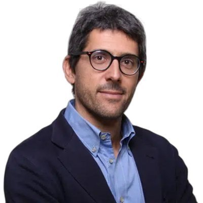
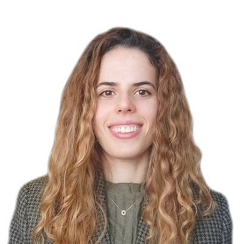
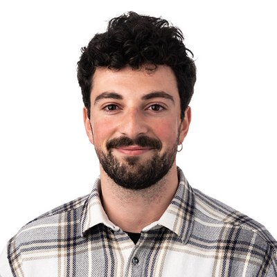
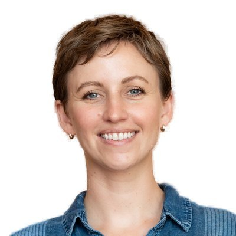

About the workshop
Multimodal learning can improve predictive performance, yet missing or unpaired inputs, noise, misalignment and distribution shifts can undermine its benefits. When Modalities Fail asks when fusion helps, when it hurts, and how systems should respond when their assumptions are violated.
Bringing together computer vision, robotics, Earth observation, ecology and healthcare, the workshop examines modality contribution, learning with imperfect inputs, and evaluation against matched unimodal baselines. We welcome theory, methods, benchmarks and rigorous empirical studies, including negative findings. Explore topics and examples to see whether your paper fits.
Contribution
When does an added modality bring complementary evidence, and when do dominance, conflict or negative transfer make predictions worse?
Imperfect conditions
Missing, weakly paired, asynchronous or corrupted inputs; class imbalance; cross-site and domain shift.
Conditional evaluation
Matched unimodal baselines, modality-subset stress tests, calibration, selective prediction and fairness under changing modality access.
The most instructive failure I have seen
Our flagship panel brings documented failure cases from different domains to one table. Each panelist presents a case; the moderator records conditions, mechanisms, evidence and fixes in a shared cross-case matrix, and the discussion distils lessons that transfer beyond a single field.
- Frame 5 min
- Cases 20 min
- Compare 15 min
- Audience 10 min
- Synthesis 5 min
Topics of interest
Does your work examine how multimodal systems behave when inputs are incomplete, unreliable or in conflict? We welcome theory, methods, benchmarks and empirical studies on the following topics, including negative findings in either paper track.
Missing and imperfect modalities
Missing, weakly paired, unpaired, asynchronous, noisy or corrupted inputs; learning with limited supervision or class imbalance.
When fusion helps or hurts
Complementarity, redundancy, conflict, modality dominance and negative transfer; comparisons with matched unimodal references.
Adaptive fusion and reliable responses
Fusion that adapts to input availability or quality; alignment, reconstruction, reweighting, fallback and abstention.
Evaluation under changing conditions
Modality-subset and degradation stress tests; cross-site and domain generalization; calibration, uncertainty, selective prediction and fairness under changing modality access.
Foundation and embodied models
Multimodal foundation models, vision-language models and vision-language-action policies whose predictions or actions change when visual evidence or other inputs degrade.
Failures in real applications
Computer vision, robotics, Earth observation, ecology and healthcare: realistic failure conditions, diagnostic evidence and limits of proposed responses.
Is my paper a good fit?
For example: a sensor-fusion method tested with a missing sensor; a vision-language model that relies on language when images degrade; or a clinical model evaluated across hospitals with different modality access. Make clear which modality condition is studied, what evidence supports the claim and where the conclusions apply. A new multimodal model can fit when it addresses these questions.
Where applicable, report unimodal references on the same task, splits and metrics, disclosing differences in pretraining, capacity and compute or tuning budgets; a modality-subset or degradation test specifying failure type, severity and origin; and the observed or assumed missingness pattern. Explain inapplicable items or unavailable references. These guide assessment of the claims made.
Invited speakers
Panel
Ranjay Krishna
University of Washington
Pierre Baldi
University of California, Irvine
Two author seats
Selected from accepted papers, with priority to students and early-career researchers.
Moderated by Arianna Francesconi. Final talk titles will be announced if the workshop is accepted.
Tentative program
Half day, in person, with talks and panel recorded. Times are counted from the start of the slot assigned by CVPR.
| Time | Session | Min |
|---|---|---|
| 00:00–00:10 | Welcome and the three scientific pillars | 10 |
| 00:10–00:40 | Invited talk: Paul Pu Liang | 30 |
| 00:40–01:10 | Invited talk: Felix Heide | 30 |
| 01:10–01:25 | Coffee break | 15 |
| 01:25–01:55 | Invited talk: Xing Han | 30 |
| 01:55–02:25 | Three contributed spotlights | 30 |
| 02:25–03:20 | Panel: The most instructive failure I have seen | 55 |
| 03:20–04:20 | Posters and cross-domain networking | 60 |
| 04:20–04:30 | Synthesis and closing research questions | 10 |
Audience questions will be collected through a live Q&A interface linked by QR code, alongside room microphones and CVPR-provided Zoom chat.
Call for papers
If the workshop is accepted, the call for papers will open in January 2027. Submissions will use the CVPR 2027 author kit, double-blind review on OpenReview and three reviews per paper.
Long papers, archival
5–8 pages excluding references, published in the CVPR 2027 workshop proceedings through CVF.
- March 5Submission deadline
- March 24Notification
- April 23Camera-ready
Short papers, non-archival
2–4 pages excluding references: work in progress, findings, datasets or position papers.
- April 2Submission deadline
- April 20Notification
- April 30Final version
All dates are 2027, anywhere on Earth. Workshop-set dates are tentative; the CVPR archival author-metadata deadline (March 29) and camera-ready deadline (April 23) are fixed. Authors who opt in may describe a documented failure case and be considered for the two author seats on the panel.
Organizers



